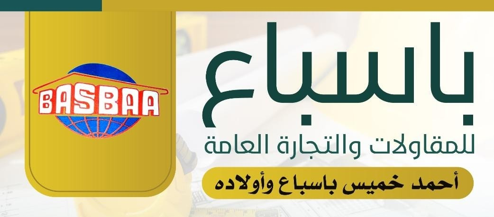

Welcome to Basbaa Contracting and General Trading
Explore our legacy of excellence and innovation in construction and trade. From building essential infrastructure to shaping iconic landmarks
WHO ARE WE ?
The early beginnings of Basbaa Contracting and General Trading Office trace back to the 1970s under the leadership of its founder, Haj Ahmed Khamis Basbaa, and his sons. Haj Ahmed Khamis Basbaa, along with his late brother Rabee, embarked on their first construction project through their nascent company by building **Bahran Al-Mashhad School** in Hadhramaut Governorate, funded by the State of Kuwait. Soon, the name of Ahmed and Rabee, sons of Khamis Basbaa, gained recognition and prominence in Hadhramaut, Aden, and across the provinces, specializing in constructing schools, hospitals, and government buildings. Their projects received accolades from international organizations for their contributions to education, health, and public works.
Basbaa Office has received numerous certificates of appreciation from ministries, institutions, government authorities, and international organizations for its accomplished projects across various sectors. The office prides itself on its accumulated expertise and its distinguished team of engineering, technical, and administrative professionals known for their skills and efficiency. Basbaa Contracting Office undertakes all types of construction and architectural projects, including hangars, warehouses, aluminum, and steel works throughout the republic. It has earned a **First-Class Contractor Classification Certificate** issued by the Ministry of Public Works and Roads.
Some of our projects
Emirates Sky Hotel
The hotel is located in the city of Aden, on the Abyan coast. It consists of four floors with its annexes and includes seventy-three single and double rooms with private bathrooms, as well as suites and apartments. The hotel is equipped with two elevators, a backup generator, a cafeteria, a laundry service, parking, 24-hour security, and a dedicated parking area for hotel guests.
Residential villa.
The villa consists of two floors, each containing four rooms. The villa features a swimming pool, a garden, a basketball court, and offers a beautiful view.

The administrative and service building of the Aden Free Zone
The building houses administrative offices and service facilities that provide integrated services to investors and local and international companies, such as issuing permits, work licenses, and logistical services. It also helps facilitate administrative procedures related to trade and industry within the zone, thus enhancing investment attraction and contributing to the growth of the local economy.
Abdullah Hatim School
consists of 36 classrooms with facilities, including football, basketball, and volleyball courts.
The Public Prosecution Building / Aden
The Public Prosecution Building in Aden is an important government facility responsible for overseeing legal and judicial matters in the region. It serves as the office for public prosecutors who are tasked with investigating and prosecuting criminal cases. The building is designed to accommodate various legal departments and offices, providing a functional space for administrative work, legal proceedings, and the pursuit of justice.